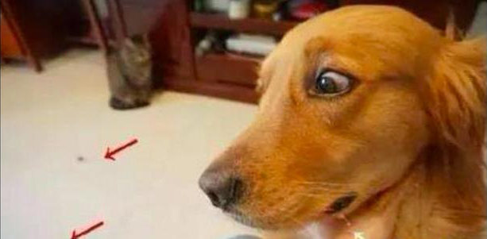
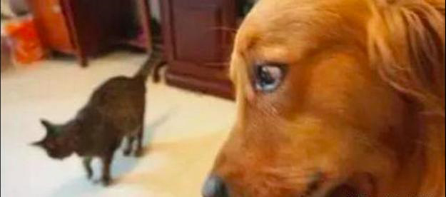
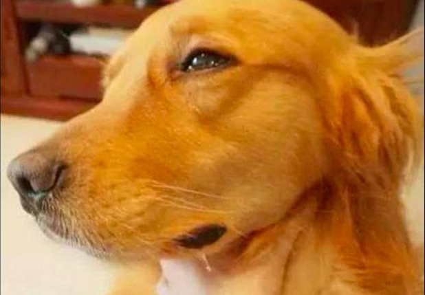

金毛眼巴巴看着牛肉粒被猫吞掉，它一脸心力憔悴小表情：都吃光了啊
作者：admin 来源：狗扑网 2020-01-15 22:20:32假如在你的眼前有一个你非常爱吃的特色美食，可是由于一些缘故不要吃不上，只有眼巴巴的看着特色美食被他人给吞掉了，那全过程是要有多煎熬呀！实际上这种事情常常产生在小宠物们的的身上，当他们碰到这种事情时，会有哪些的反映呢？
就会有那么一位网友，家中养了只金毛和一只猫猫。今日网友就想检测一下金毛对吃不上的特色美食的反映。网友起先把一些牛肉粒撒在路面上，随后叫金毛回来牢牢地怀着它不许它走，只有让它看着路面上的牛肉却不可以以往吃，觉得它的眼珠都快瞪出来！接着网友又把猫咪叫回来，猫猫见到牛肉粒。
金毛确定牛肉粒被吃光了后，一脸心力憔悴的小表情，嘴唇上还流着哈喇子呢，可是却吃不上牛肉了！尽管有点儿心痛金毛，但见到它的模样，我如何那麼要想笑呢！金毛：喵兄，请帮我留一点啊！都吃光了啊！铲屎的，你需不需要拆磨我呀！
